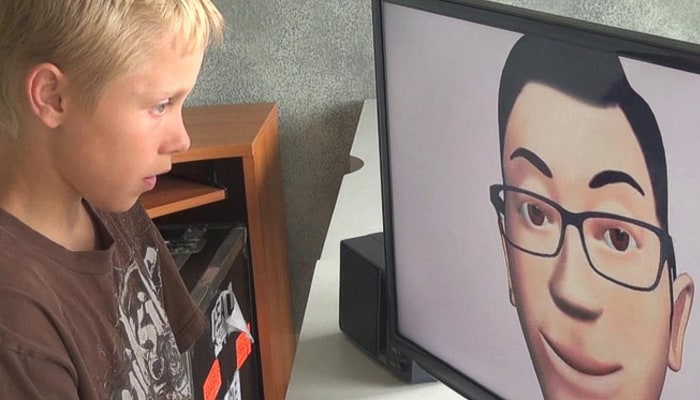
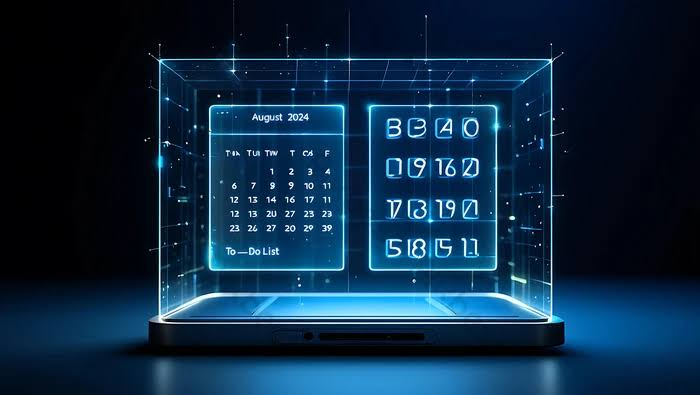

סימולטורים חברתיים (AI)
אווטארים חכמים מבוססי בינה מלאכותית יאפשרו לבוגרים על הרצף לתרגל סיטואציות מורכבות (כמו ראיונות עבודה) ולקבל משוב מדויק ונטול שיפוטיות בסביבה בטוחה.

חיזוי מוקדם של הצפה (Meltdown)
צמידים חכמים יזהו עומס חושי מתקרב על ידי מדידת מוליכות עור ושינויים עצביים. המערכת תתריע למשתמש כ-20 דקות מראש, מה שיאפשר לו לעבור לסביבה שקטה בזמן.
הקרנות הולוגרפיות לשגרה
מקרנים זעירים יקרינו תמיכה חזותית (כמו סדר פעולות ההתארגנות בבוקר) ישירות על חפצים בחדר. הפתרון נועד למנוע את העומס החושי והפיזי שכרוך בהרכבת משקפי מציאות רבודה (AR).
